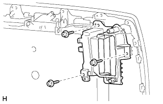
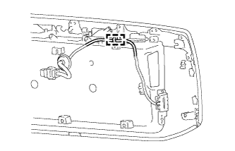
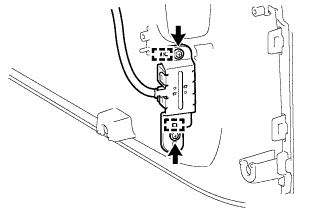
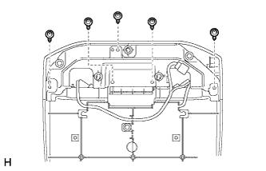
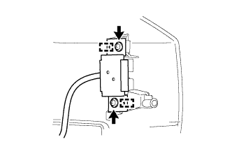

ВЫКЛЮЧАТЕЛЬ БЛОКИРОВКИ / РАЗБЛОКИРОВКИ СИСТЕМЫ ПОСАДКИ > СНЯТИЕ |
| 1. СНИМИТЕ НАРУЖНУЮ ОБЛИЦОВКУ ДВЕРИ БАГАЖНОГО ОТДЕЛЕНИЯ В СБОРЕ (для моделей без кронштейна запасного колеса на двери багажного отделения) |
Снимите наружную облицовку двери багажного отделения в сборе (Нажмите здесь).
| 2. СНИМИТЕ ФИКСАТОР ОБЛИЦОВКИ ДВЕРИ БАГАЖНОГО ОТДЕЛЕНИЯ № 1 (для моделей без кронштейна запасного колеса на двери багажного отделения) |
|  |
Выверните 3 винта и снимите держатель наружной накладки двери багажного отделения № 1.
| 3. СНИМИТЕ ВЫКЛЮЧАТЕЛЬ ЭЛЕКТРОННОГО КЛЮЧА НА ДВЕРИ БАГАЖНОГО ОТДЕЛЕНИЯ (для моделей без кронштейна запасного колеса на двери багажного отделения) |
|  |
Снимите зажим.
|  |
Выверните 2 винта.
Освободите 2 направляющих и снимите выключатель электронного ключа на двери багажного отделения.
| 4. СНИМИТЕ НАРУЖНУЮ ОБЛИЦОВКУ ДВЕРИ БАГАЖНОГО ОТДЕЛЕНИЯ В СБОРЕ (для моделей с кронштейном запасного колеса на двери багажного отделения) |
Снимите наружную облицовку двери багажного отделения в сборе (Нажмите здесь).
| 5. СНИМИТЕ КОЛПАК ЛАМПЫ ОСВЕЩЕНИЯ ЗАДНЕГО НОМЕРНОГО ЗНАКА (для моделей с кронштейном запасного колеса на двери багажного отделения) |
|  |
Выверните 5 винтов и снимите колпак лампы освещения дверного знака.
| 6. СНИМИТЕ ВЫКЛЮЧАТЕЛЬ ЭЛЕКТРОННОГО КЛЮЧА НА ДВЕРИ БАГАЖНОГО ОТДЕЛЕНИЯ (для моделей с кронштейном запасного колеса на двери багажного отделения) |
|  |
Выверните 2 винта.
Освободите 2 направляющих и снимите выключатель электронного ключа на двери багажного отделения.